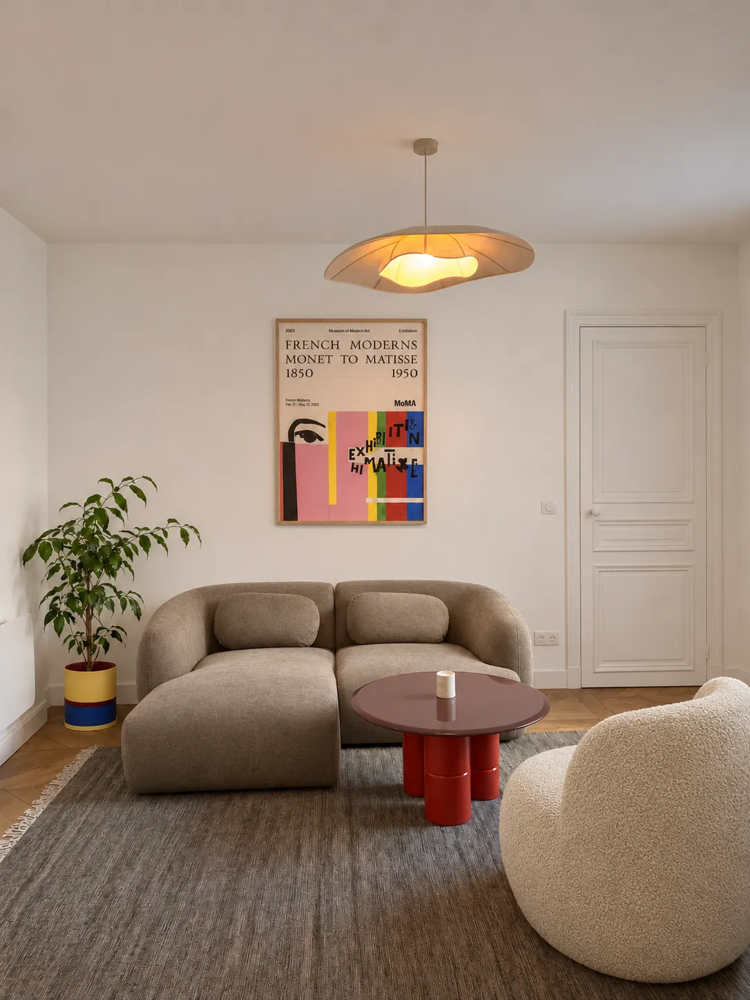
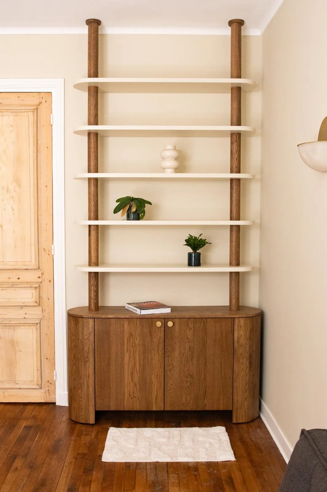

Stouls Studio / Portfolio
Portfolio de Stouls Studio
Des lieux imaginés pour ceux qui les vivent.

Appartement Opéra
Paris, 9e arrondissement, 90 m²
Appartement Bon Marché
Paris, 6e arrondissement, 50 m²
Studio Odéon
Paris, 6e arrondissement, 26 m²
Studio Saint-Michel
Paris, 6e arrondissement, 24 m²
Studio Saint-Germain-des-Prés
Paris, 6e arrondissement, 27 m²
Studio Champ-de-Mars
Paris, 7e arrondissement, 30 m²
Appartement Montrouge
Montrouge, au sud de Paris, 46 m²
Appartement Montmartre
Paris, 18e arrondissement, 27 m²
Appartement Lamarck
Paris, 18e arrondissement, 45 m²
Appartement Grands Boulevards
Paris, 10e arrondissement, 30 m²
Appartement Levallois-Perret
Levallois-Perret, à l'ouest de Paris, 55 m²
Appartement Boulogne
Boulogne, à l'ouest de Paris, 55 m²
Appartement Bagnolet
Bagnolet, à l'est de Paris, 65 m²
Maison de campagne en Bourgogne
Bourgogne, France, 150 m²
Maison à Sifnos
Sifnos, Grèce, 160 m²
Appartement Montparnasse
Paris, Montparnasse, 45 m²
Appartement Neuilly-sur-Seine
Neuilly-sur-Seine, à l'ouest de Paris, 90 m²
Mobilier sur mesure
Votre projet
Dites-moi ce que vous cherchez, ou envoyez-moi l'annonce d'un appartement que vous envisagez.
D'autres réalisations sont sur Instagram @stouls_studio.